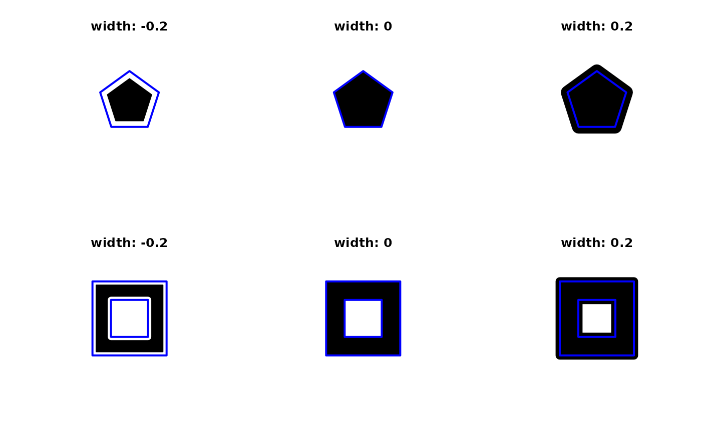
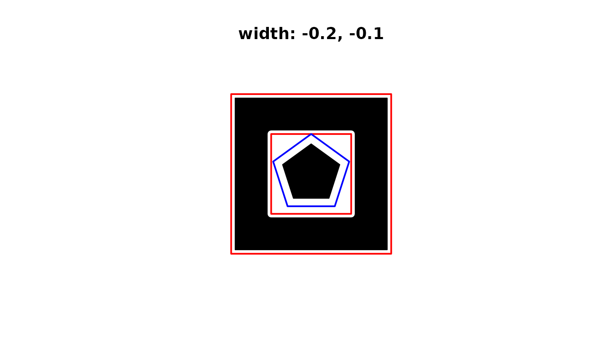
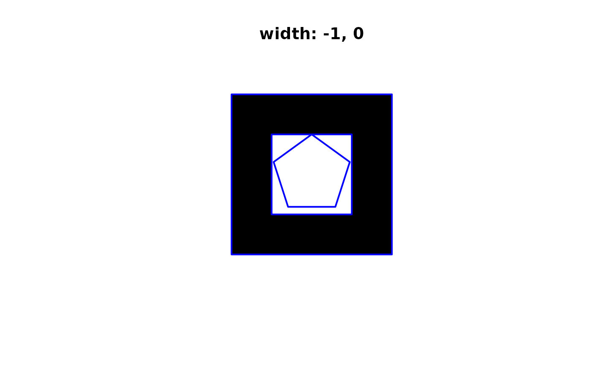
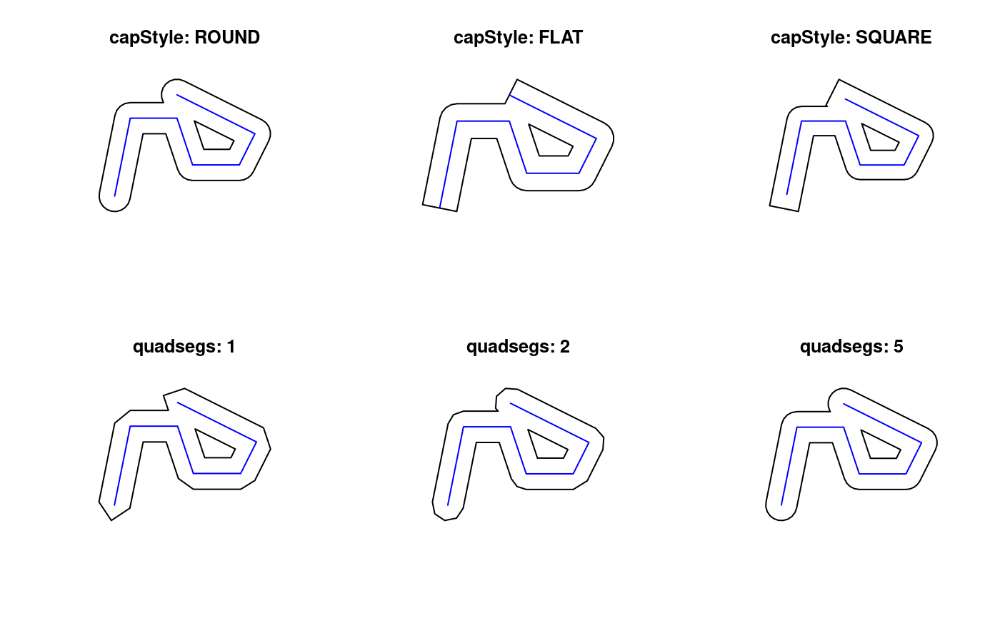
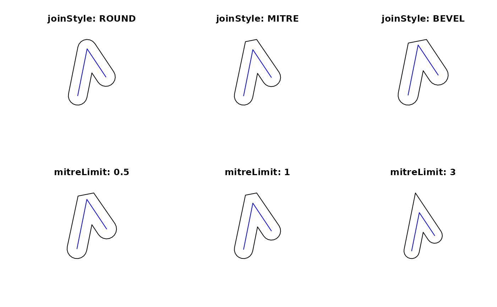

misc-gBuffer.RdExpands the given geometry to include the area within the specified width with specific styling options.
gBuffer(spgeom, byid=FALSE, id=NULL, width=1.0, quadsegs=5, capStyle="ROUND",
joinStyle="ROUND", mitreLimit=1.0)sp object as defined in package sp
Logical determining if the function should be applied across subgeometries (TRUE) or the entire object (FALSE)
Character vector defining id labels for the resulting geometries, if unspecified returned geometries will be labeled based on their parent geometries' labels.
Distance from original geometry to include in the new geometry. Negative values are allowed. Either a numeric vector of length 1 when byid is FALSE; if byid is TRUE: of length 1 replicated to the number of input geometries, or of length equal to the number of input geometries
Number of line segments to use to approximate a quarter circle.
Style of cap to use at the ends of the geometry. Allowed values: ROUND,FLAT,SQUARE
Style to use for joints in the geometry. Allowed values: ROUND,MITRE,BEVEL
Numerical value that specifies how far a joint can extend if a mitre join style is used.
SpatialPolygons (or a SpatialPolygonsDataFrame if byid=TRUE and spgeom has a data.frame); if negative width(s) lead the object to disappear, NULL is returned for byid FALSE, and component Polygons objects are dropped if empty for byid TRUE; the SpatialPolygonsDataFrame is subsetted by row.names or id if given to retain non-empty geometry rows
p1 = readWKT("POLYGON((0 1,0.95 0.31,0.59 -0.81,-0.59 -0.81,-0.95 0.31,0 1))")
p2 = readWKT("POLYGON((2 2,-2 2,-2 -2,2 -2,2 2),(1 1,-1 1,-1 -1,1 -1,1 1))")
par(mfrow=c(2,3))
plot(gBuffer(p1,width=-0.2),col='black',xlim=c(-1.5,1.5),ylim=c(-1.5,1.5))
plot(p1,border='blue',lwd=2,add=TRUE);title("width: -0.2")
plot(gBuffer(p1,width=0),col='black',xlim=c(-1.5,1.5),ylim=c(-1.5,1.5))
plot(p1,border='blue',lwd=2,add=TRUE);title("width: 0")
plot(gBuffer(p1,width=0.2),col='black',xlim=c(-1.5,1.5),ylim=c(-1.5,1.5))
plot(p1,border='blue',lwd=2,add=TRUE);title("width: 0.2")
plot(gBuffer(p2,width=-0.2),col='black',pbg='white',xlim=c(-2.5,2.5),ylim=c(-2.5,2.5))
plot(p2,border='blue',lwd=2,add=TRUE);title("width: -0.2")
plot(gBuffer(p2,width=0),col='black',pbg='white',xlim=c(-2.5,2.5),ylim=c(-2.5,2.5))
plot(p2,border='blue',lwd=2,add=TRUE);title("width: 0")
plot(gBuffer(p2,width=0.2),col='black',pbg='white',xlim=c(-2.5,2.5),ylim=c(-2.5,2.5))
plot(p2,border='blue',lwd=2,add=TRUE);title("width: 0.2")

p3 <- readWKT(paste("GEOMETRYCOLLECTION(",
"POLYGON((0 1,0.95 0.31,0.59 -0.81,-0.59 -0.81,-0.95 0.31,0 1)),",
"POLYGON((2 2,-2 2,-2 -2,2 -2,2 2),(1 1,-1 1,-1 -1,1 -1,1 1)))"))
par(mfrow=c(1,1))
plot(gBuffer(p3, byid=TRUE, width=c(-0.2, -0.1)),col='black',pbg='white',
xlim=c(-2.5,2.5),ylim=c(-2.5,2.5))
plot(p3,border=c('blue', 'red'),lwd=2,add=TRUE);title("width: -0.2, -0.1")

library(sp)
p3df <- SpatialPolygonsDataFrame(p3, data=data.frame(i=1:length(p3),
row.names=row.names(p3)))
dim(p3df)
#> [1] 2 1
row.names(p3df)
#> [1] "1" "2"
dropEmpty = gBuffer(p3df, byid=TRUE, id=letters[1:nrow(p3df)], width=c(-1, 0))
dim(dropEmpty)
#> [1] 1 1
row.names(dropEmpty)
#> [1] "b"
row.names(slot(dropEmpty, "data"))
#> [1] "b"
plot(dropEmpty, col='black', pbg='white', xlim=c(-2.5,2.5),ylim=c(-2.5,2.5))
plot(p3df,border=c('blue'),lwd=2,add=TRUE);title("width: -1, 0")

par(mfrow=c(2,3))
#Style options
l1 = readWKT("LINESTRING(0 0,1 5,4 5,5 2,8 2,9 4,4 6.5)")
par(mfrow=c(2,3))
plot(gBuffer(l1,capStyle="ROUND"));plot(l1,col='blue',add=TRUE);title("capStyle: ROUND")
plot(gBuffer(l1,capStyle="FLAT"));plot(l1,col='blue',add=TRUE);title("capStyle: FLAT")
plot(gBuffer(l1,capStyle="SQUARE"));plot(l1,col='blue',add=TRUE);title("capStyle: SQUARE")
plot(gBuffer(l1,quadsegs=1));plot(l1,col='blue',add=TRUE);title("quadsegs: 1")
plot(gBuffer(l1,quadsegs=2));plot(l1,col='blue',add=TRUE);title("quadsegs: 2")
plot(gBuffer(l1,quadsegs=5));plot(l1,col='blue',add=TRUE);title("quadsegs: 5")

l2 = readWKT("LINESTRING(0 0,1 5,3 2)")
par(mfrow=c(2,3))
plot(gBuffer(l2,joinStyle="ROUND"));plot(l2,col='blue',add=TRUE);title("joinStyle: ROUND")
plot(gBuffer(l2,joinStyle="MITRE"));plot(l2,col='blue',add=TRUE);title("joinStyle: MITRE")
plot(gBuffer(l2,joinStyle="BEVEL"));plot(l2,col='blue',add=TRUE);title("joinStyle: BEVEL")
plot(gBuffer(l2,joinStyle="MITRE",mitreLimit=0.5));plot(l2,col='blue',add=TRUE)
title("mitreLimit: 0.5")
plot(gBuffer(l2,joinStyle="MITRE",mitreLimit=1));plot(l2,col='blue',add=TRUE)
title("mitreLimit: 1")
plot(gBuffer(l2,joinStyle="MITRE",mitreLimit=3));plot(l2,col='blue',add=TRUE)
title("mitreLimit: 3")
